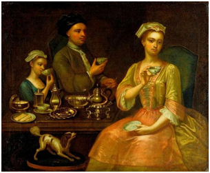
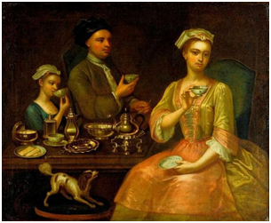

история кофе
История кофе охватывает несколько периодов. Она берёт начало с древнейших времён и уходит корнями в первые цивилизации Ближнего Востока, хотя происхождение кофе до сих пор остаётся неясным.
Считается, что эфиопские предки народов оромо первыми заметили бодрящий эффект кофе[1], однако никаких прямых доказательств на этот счёт нет, не сохранилось и свидетельств о том, где в Африке произрастал кофе или кто среди африканцев мог знать о существовании кофе раньше XVII века[1]. Согласно широко распространённой легенде, первооткрывателем уникальных свойств кофейного дерева стал эфиопский пастух Калдим приблизительно в 850 году.
 
